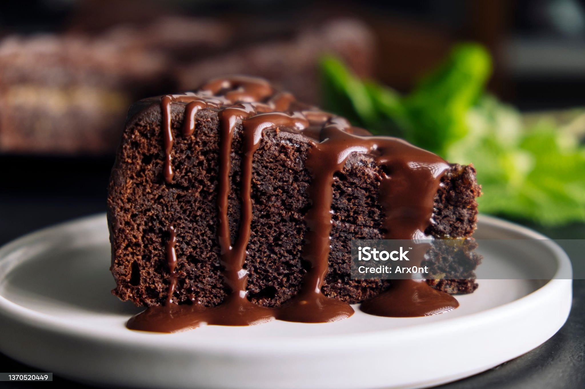

Cake

Description
Cake is a confection made from flour, sugar, among aother ingredients that is usually baked.
Cake Ingredients
- ½ of room temperature butter
- ½ cup of vegetable oil
- 1½ cup of granulated sugar
- 4 large eggs
- 1 Tbsp of vanilla extract
- 3 cups of all-purpose flour
- 1 Tbsp of baking powder
- ½ teaspoon of salt
- 1¼ cup of buttermilk
- 1 batch of chocolate frosting
Instructions
Steps:
- Preheat oven to 350°F and prepare two deep 8" round cake pans by lining the bottoms with parchment paper and lightly greasing the sides. Set aside.
- In the bowl of a stand mixer (or in a large bowl using an electric mixer) cream together the butter, canola oil and sugar until creamy and well-combined.
- Add eggs, one at a time, beating until thoroughly combined after each addition.
- Stir in vanilla extract.
- In a separate, medium-sized bowl, whisk together flour, baking powder, and salt.
- Using a spatula and gently hand-mixing, alternate adding flour mixture and buttermilk to the butter mixture, starting and ending with flour mixture and mixing until just combined after each addition. The batter should be thoroughly combined, but there may be some small lumps in the batter and avoid over-mixing (and do not use your electric mixer or stand mixer for this step).
- Evenly divide batter into your prepared cake pans, and bake on 350F (175C) for 30-35 minutes. When the cake is done, the surface should spring back to the touch and a toothpick inserted in the center should come out mostly clean with few moist crumbs (no wet batter).
- Allow cakes to cool in their cake pans for 10-15 minutes before inverting onto cooling rack to cool completely before frosting.
- Frost cake using chocolate frosting and decorate with sprinkles (if desired).
Back to Odin Recipes